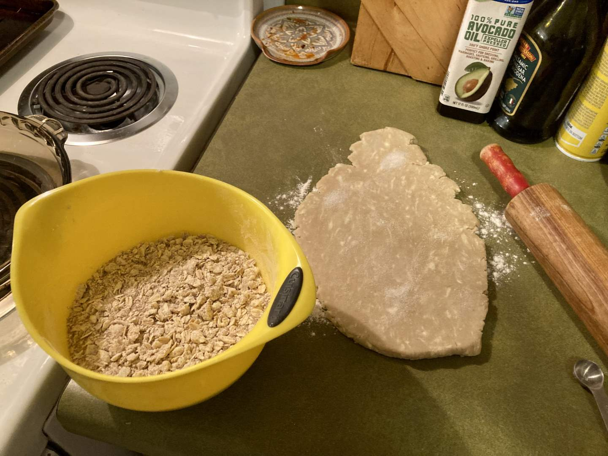

Pie 26: Pear-Ginger
2023-12-21Filling recipe is from Tasting Table.
Crust recipe from Tastes Better From Scatch.
Crumble recipe from Simply Recipes.
Taste:
Difficulty:
Vibes:
Suggested pairings: leftovers that you have been neglecting
One of the best parts of baking pies every week has been getting to satisfy random cravings that I develop in a way that transcends mindless snacking. I don’t know whether the craving for pears or ginger came first, but either way, I really wanted to have one of them, and the other ingredient emerged as a natural complement to the first. In the pie world, there are few pies as widely loved as the apple pie. This recipe claims to “give apples a run for their money,” but as our faithful readers will know, we here in the Scott family are strongly against pie elitism and we want each pie to be valued for what it is, not what it could be. The green and red colors of these two pies remind me of the Mario Bros., Luigi and Mario. Despite popular characterization, Luigi has just as much to offer to the world of gaming as Mario does! Just like pears have just as much unique deliciousness to share with the world as apples do.
We began this pie on a cold Thursday night after I came home from work. I was very thankful to Ben for offering to peel the pears, as I had procrastinated starting the pie due to this undesirable task. He tackled it like a pro and without complaining. Ripe pears are quite soft, so he blanched them before gently rubbing off the skin rather than peeling them with a knife. While Ben prepared the pears, I put together the sauce for the filling, which involved chopping candied ginger, juicing a lemon, and mixing sugar and spice and everything nice. The filling was quite dry as the juicy pears were to supply all the necessary moisture.
After letting the pears marinate for half an hour, I strained the liquid into a saucepan. This watery mixture thickened into a rich filling, which we recombined with the pears. Ben had already rolled out the crust and crimped the edges of the crust, so I was able to deposit the filling in the dish as soon as it was ready. [Ben here. You may note in the picture of the crust that there are a lot of crystals lying on top of it. About a month ago when I prepared this dough, I forgot to add salt. Can’t make a pie crust with no salt.] We only had one single crust leftover from a past pie-making endeavor, so we decided to top this pie with an oat crumble, which we found on the recipe for a different pear and ginger pie. After adorning the filling with the oat topping, we popped the pie into the oven for an unbearable hour and twenty minutes.
It came out golden, with no burnt crust, and smelled like ginger tea. The first slices we ate that night were quite messy, so we decided to wait till the next day when the filling had hardened to capture a better slice picture.
This pie was delicious. Pear and ginger make lovely pie-mates, and the candied ginger had a nice bite to it. This was a solid, middle-of-the-road pie. Nobody would be disappointed to receive this pie, and the ginger could be a nice touch for any sick loved ones sheltering from the winter cold and viruses.